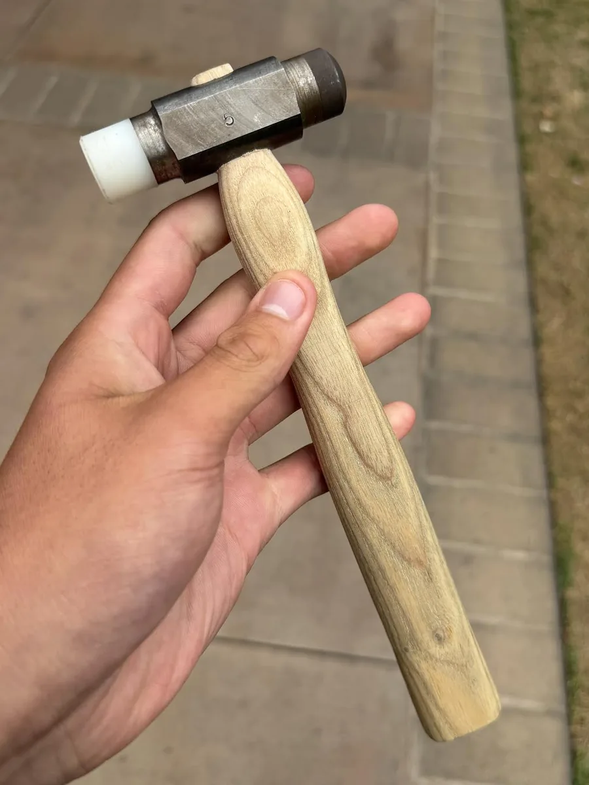
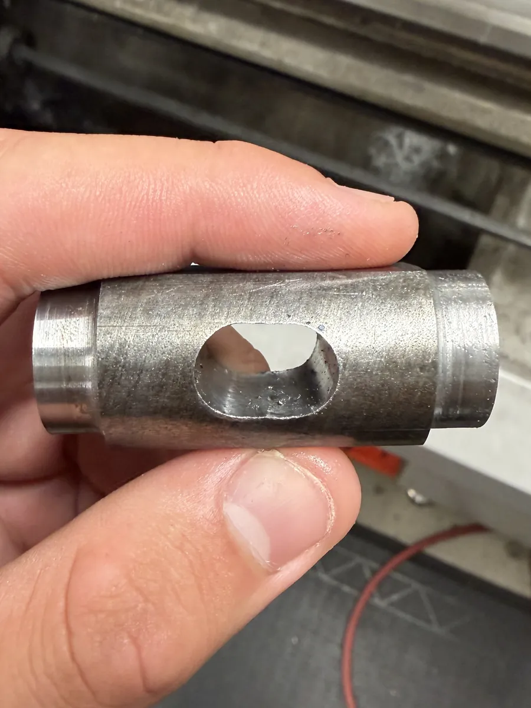
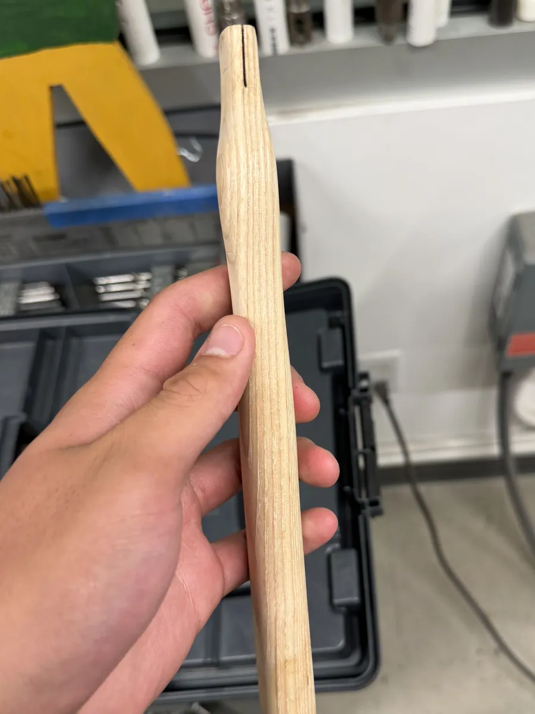

Machined Hammer
A dual-face hammer fabricated to specification from engineering drawings.
- Role
- Solo
- Course
- E4: Introduction to Engineering Design and Manufacturing, Harvey Mudd
- When
- June – July 2026
- Processes
- Turning, milling, bandsaw cutting, sandblasting

Scope
Fabricated all four components (head, hard face, soft face, and handle) working from dimensioned engineering drawings. The objective was dimensional accuracy: each part was machined to hold the dimensions and tolerances called out on its drawing so the components fit together as a single assembly.


Result
Scored 94/100 on the final evaluation.